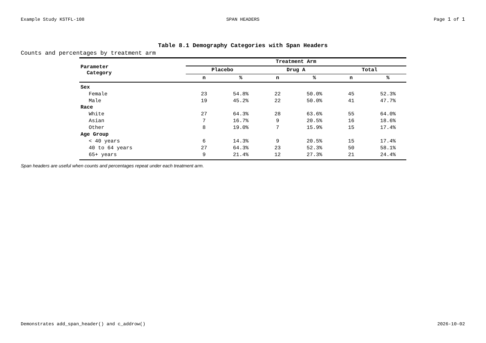
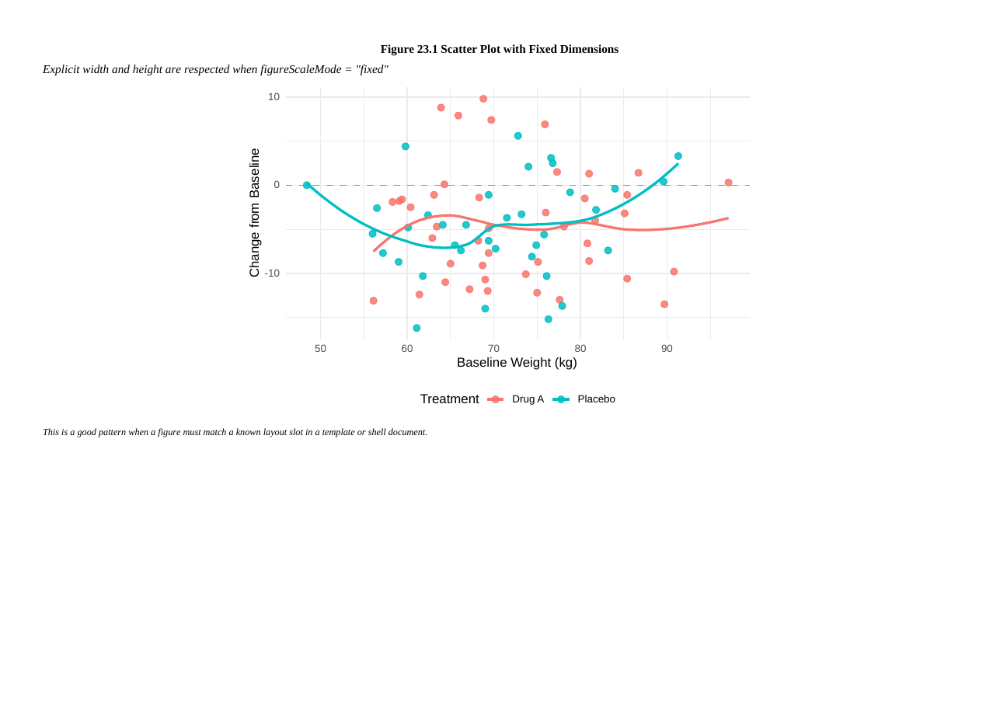
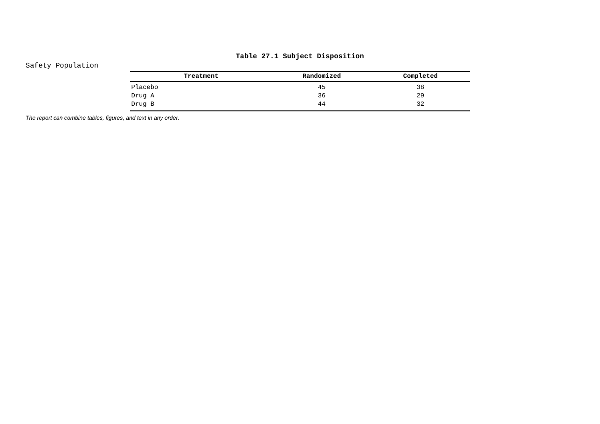

Clinical Tables, Figures, and Listings —
from R code to validated DOCX, in one pipeline.
ksTFL is a professional R package designed to fill a long-standing gap in the R ecosystem: the lack of a dedicated, end-to-end solution for producing well-formatted, regulatory-compliant clinical Tables, Figures, and Listings (TFLs). While R excels at statistical analysis, generating submission-quality DOCX outputs that meet pharmaceutical industry standards has traditionally required fragile workarounds or external tooling. ksTFL solves this by distilling the best ideas from existing reporting solutions into a simple, minimalistic, yet highly flexible declarative language — a compact set of composable functions whose combinations can produce virtually any clinical output format.
The core philosophy is data–presentation separation: input data stays clean and planar, free of reporting artefacts such as merged cells, indentation columns, or display-only rows. Formatting, pagination, grouping, and styling are declared independently and applied at render time. This keeps datasets maintainable, traceable, and validation-ready — exactly what regulated environments demand.
Under the hood, a built-in rendering engine with text shaping converts declarative specs into styled DOCX documents with deterministic, pixel-perfect pagination. Rendering is extremely fast even on large datasets, making ksTFL practical for batch production of hundreds of outputs in a single pipeline run.
From one pipe to a report page
The whole point of ksTFL is that the code is the specification of the output. This is a real, runnable fragment:
create_table(demography) |>
define_cols(LEVEL, label = "Parameter Category", valueStyleRef = "indent_1") |>
add_span_header(c(PLCB_N, PLCB_PCT), "Placebo") |>
add_span_header(c(DRGA_N, DRGA_PCT), "Drug A", stubOrder = 1) |>
add_title("Table 8.1 Demography with Span Headers") |>
add_footnote("Counts and percentages by treatment arm.") |>
set_document(footnotePlace = "last_page") |>
write_doc("table_8_1.docx")And this is what ksTFL renders from it — a print-ready page, headers, span lattice, footnotes and all:

add_span_header() lattice and c_addrow() section rows — Real Examples →

figureScaleMode) — Getting Started →

Why teams choose ksTFL
- Deterministic pagination — font shaping guarantees pixel-perfect, reproducible layouts; what validates once paginates identically forever.
- Declarative syntax — describe what to render, not how; a small function vocabulary covers the full range of clinical outputs.
- Replayable specifications — every report serializes its metadata, so a submission package can be re-rendered years later without re-running the analysis pipeline.
- C++ engine, batch speed — multi-spec reports of hundreds of pages render in seconds.
-
Style atoms, not handcraft — 122 built-in formatting atoms (
fc_*,bg_*,indent_*, alignments, borders) compose into any corporate shell or guideline format.
Documentation lives on this site; the cheatsheet and slides are one click away in the navbar, and the example repository holds 37 fully commented programs — one DOCX per feature, regenerated with every release.